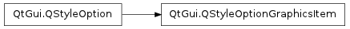

QStyleOptionGraphicsItem ¶

Synopsis ¶
Static functions ¶
- def levelOfDetailFromTransform (worldTransform)
Detailed Description ¶
The PySide.QtGui.QStyleOptionGraphicsItem class is used to describe the parameters needed to draw a PySide.QtGui.QGraphicsItem .
For performance reasons, the access to the member variables is direct (i.e., using the . or -> operator). This low-level feel makes the structures straightforward to use and emphasizes that these are simply parameters.
For an example demonstrating how style options can be used, see the Styles example.
- class PySide.QtGui. QStyleOptionGraphicsItem ¶
- class PySide.QtGui. QStyleOptionGraphicsItem ( other )
- class PySide.QtGui. QStyleOptionGraphicsItem ( version )
-
Parameters: - version – PySide.QtCore.int
- other – PySide.QtGui.QStyleOptionGraphicsItem
Constructs a PySide.QtGui.QStyleOptionGraphicsItem .
Constructs a copy of other .
- PySide.QtGui.QStyleOptionGraphicsItem. StyleOptionVersion ¶
-
This enum is used to hold information about the version of the style option, and is defined for each PySide.QtGui.QStyleOption subclass.
Constant Description QStyleOptionGraphicsItem.Version 1 The version is used by PySide.QtGui.QStyleOption subclasses to implement extensions without breaking compatibility. If you use qstyleoption_cast() , you normally do not need to check it.
See also
QStyleOptionGraphicsItem.StyleOptionType
- PySide.QtGui.QStyleOptionGraphicsItem. StyleOptionType ¶
-
This enum is used to hold information about the type of the style option, and is defined for each PySide.QtGui.QStyleOption subclass.
Constant Description QStyleOptionGraphicsItem.Type The type of style option provided ( SO_GraphicsItem for this class). The type is used internally by PySide.QtGui.QStyleOption , its subclasses, and qstyleoption_cast() to determine the type of style option. In general you do not need to worry about this unless you want to create your own PySide.QtGui.QStyleOption subclass and your own styles.
See also
QStyleOptionGraphicsItem.StyleOptionVersion
- PySide.QtGui.QStyleOptionGraphicsItem. exposedRect ¶
- PySide.QtGui.QStyleOptionGraphicsItem. matrix ¶
- PySide.QtGui.QStyleOptionGraphicsItem. levelOfDetail ¶
- static PySide.QtGui.QStyleOptionGraphicsItem. levelOfDetailFromTransform ( worldTransform ) ¶
-
Parameters: worldTransform – PySide.QtGui.QTransform Return type: PySide.QtCore.qreal Returns the level of detail from the worldTransform .
Its value represents the maximum value of the height and width of a unity rectangle, mapped using the worldTransform of the painter used to draw the item. By default, if no transformations are applied, its value is 1. If zoomed out 1:2, the level of detail will be 0.5, and if zoomed in 2:1, its value is 2.